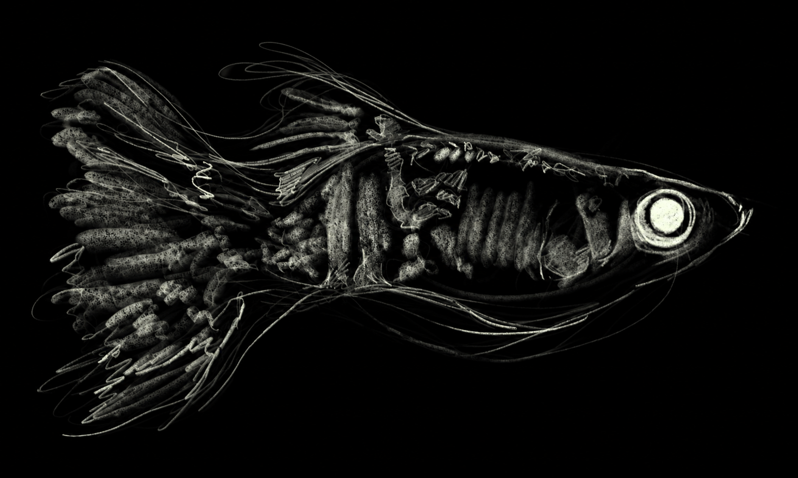

Initially, I planned to create a simple frame-by-frame fish animation. However, as I experimented with movement, I became more interested in how fish experience time differently from humans.
I developed the idea into an aquarium scene, using arrays to animate multiple fish with different sizes, speeds, and directions. I also used lerp() to make their movements smoother and give them a more natural, floating motion.
Finally, I added a video of the human world behind the aquarium and adjusted its playback speed to show the contrast between human time and fish time. I also experimented with opacity and blur to make the boundary between the two worlds feel less clear. I wanted the human world to look distant and unfamiliar, as if the fish were looking at it through a screen.